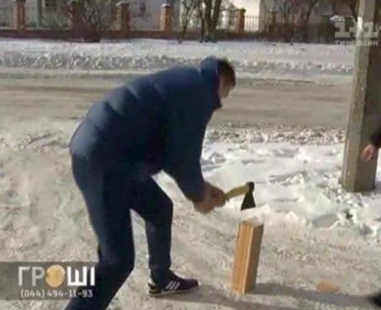

Yuriy Nadoba expresses his support to the people of EuroMaidan
On May 18, 2013, Yuriy attacked the journalists of TV Channel 9 during the protests. He wore a tracksuit and beat up a mass media representative. Later Yuriy got the suspended sentence for the attack on journalists he committed. However, Yuriy Nadoba now feels sorry about his actions in the past. In his interview for a TV show "Money", he said that he would like to come to Maidan and support people there without being paid for that and without causing any provocations.
Because of his sentence that implies the ban to participate in any political meetings and actions for 2 years, Yuriy cannot come to Maidan. Thus, to express his solidarity with the protesters he chopped firewood for the activists at EuroMaidan. The activists of EuroMaidan were glad to receive such gift and said they were glad that Yuriy Nadoba had changed for the better.
